X 72500 - XTER
Destinées à assurer des relations Autorail express longue distance et à réhausser la qualité du matériel thermique régional de la SNCF, les X 72500 sont un matériel révolutionnaire à leur arrivée en 1997. Ils sont la tête de pont d'une nouvelle génération d'autorails et plus largement de matériel régional. Nouveaux coloris à base de gris métallisé 862 et bleu institution 239, sièges individuels, climatisation, nez carrénés et performances élevées (vitesse limite de 160 km/h, une première) leur valent un surnom de petit TGV par les clients.
La motorisation des XTER est fortement dimensionnée. Chaque motrice emporte deux moteurs 6 cylindres MAN de 300 kW qui engrènent chacun sur un essieu. La puissance des auxiliaires est fournie par un groupe électrogène indépendant dans chaque caisse. Comme l'XTER s'attèle par Sharffenberg, il ne peut s'associer aux XR 6000 à 6200 existantes. Les rames d'un ou de plusieurs X 72500 en UM conservent alors un rapport poids puissance des plus élevés.
Les XTER s'emparent de Paris-Vendôme-Tours puis de Paris-Granville. Sur cet axe, il ne s'agit pas de TER mais d'un service intercité. Les quinze X 72500 affectés sur cette ligne reçoivent une remorque intermédiaire, laquelle possède également son propre groupe auxiliaire. Ces rames ne portent pas le grand autocollant TER qui orne le reste de la série.
Les services des XTER se sont étendus également sur Marseille-Briançon, Valence-Grenoble-Chambéry-Genève, Mende-Nîmes-Montpellier, Clermont-Ferrand-Toulouse, Paris-Culmont, Tours-Caen, Paris-Laon... Une commande supplémentaire porte le nombre de rames de 105 à 117. 17 remorques sont également commandées. Les nouvelles rames sont livrées en 2002.
Hélas, les X 72500 révèlent très vite des défauts de jeunesse qui perdureront. Soucis de transmission, de groupes auxiliaires, des portes d'accès, fragilité des nez amovibles, une réputation de bête à chagrin leur colle depuis à la peau. Le nombre de moteurs rend l'engin particulièrement bruyant et le confort n'égalera jamais celui d'une rame tractée.
Tous ces soucis les ont évincés de plusieurs relations au profit des AGC Bombardier plus fiables et silencieux. A la mise à la retraite des RTG, la relation Lyon-Bordeaux est confiée quelques temps à des rames Corail qui perdent beaucoup de temps aux nombreux rebroussements et qui subissent des ralentissements sur les grands viaducs d'Auvergne. Le service est alors confié aux X 72500. Ils reprennent aussi les Lyon-Nantes par Moulins après le retrait des CC 72000.
Machines remarquables de la série
l'X 72547/48 a participé à des essais de suspension pendulaire en tant que démonstrateur Alstom. Le projet n'a pas eu de suite et il fut remis au type.
Quelques données techniques
Constructeur : Alstom
Motorisation : 2 moteurs 6 cylindres MAN turbocompressés par motrice, 4 par rames.
Transmission : Boite de vitesse hydraudynamique Voith.
Puissance totale : 1200 kW (sans compter les auxiliaires)
Aptitude à l'UM entre eux
Longueur : 52,90 m (bicaisse), 78,50 m (tricaisse)
Masse : 116t (bicaisse), 161t (tricaisse)
Pour plus d'info :
La fiche X 72500 sur Wikipedia
Fiche technique des X 72500 de Florent Brisou
L'inventaire des X 72500 sur Trains du Sud-Ouest
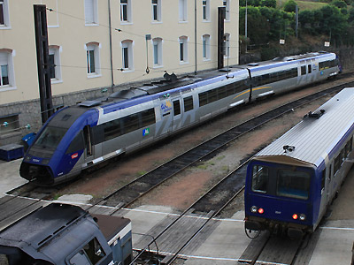
L'X 72501 Aquitaine stationne à Limoges (08/10/2011)
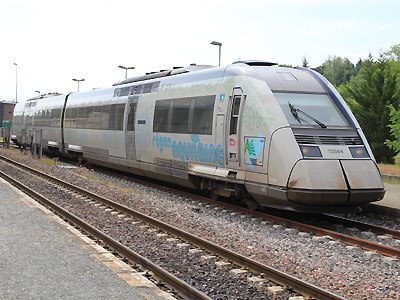
L'X 72594-93 dans la nouvelle livrée Aquitaine à Sarlat (25/05/2015)
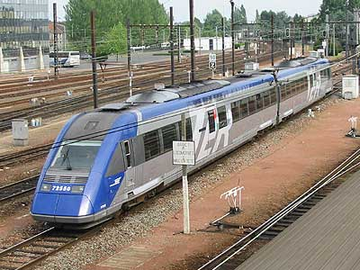
L'X 72550 Centre à Tours
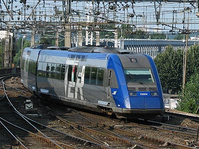
L'X 72574 Limousin à Bordeaux (13/07/2003)
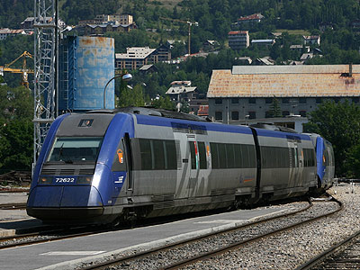
L'X 72622 PACA à Briançon (16/07/2005)
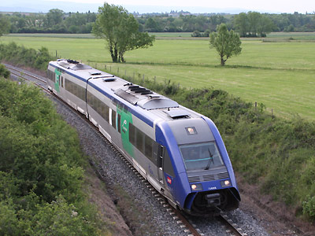
L'X 72685 Auvergne à Arvant (07/05/2011)
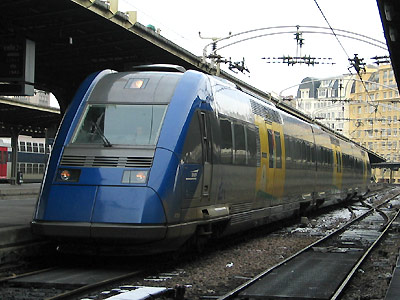
L'X 72724/73 Champagne-Ardennes à Paris Est (27/01/2004)
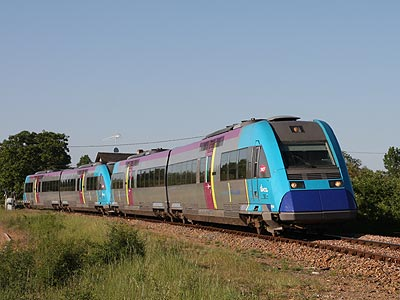
L'X 72599 Livrée Pays de la Loire mais exploité par la région Centre sur Paris-Vendôme (24/05/2010)
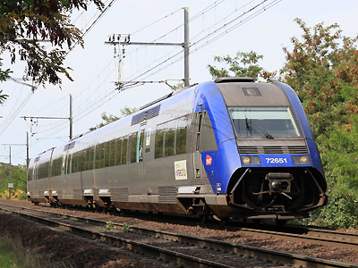
L'X 72651 tricaisse n'est pas un TER mais un "Corail Intercités"! (10/09/2011)
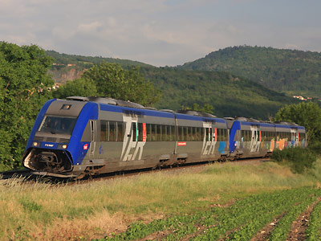
L'X 72587 Midi Pyrénées sur un Toulouse-Clermont (22/05/2011)
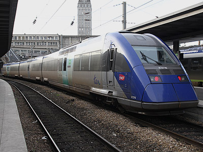
L'X 72716-15 tricaisse Picardie au départ d'Amiens pour Abbeville (29/10/2012)